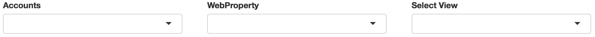
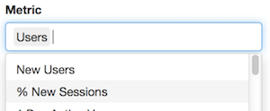

To use in Shiny with a multi-user login, use googleAuth’s with_shiny. See the googleAuthR readme for details on general Google authentication with Shiny.
A video tutorial on how to create a Shiny app with googleAnalyticsR is available below. The first 20 mins creates a basic Shiny app fetching data, the last 20 mins go into combining with other libraries and using custom HTML templates:
## in server.R library(googleAuthR) library(googleAnalyticsR) library(shiny) shinyServer(function(input, output, session){ ## Get auth code from return URL access_token <- callModule(googleAuth, "auth1") gadata <- reactive({ with_shiny(google_analytics_3, id = "222222", ## replace with your View ID start="2015-08-01", end="2015-08-02", metrics = c("sessions", "bounceRate"), dimensions = c("source", "medium"), shiny_access_token = access_token()) }) output$something <- renderPlot({ ## only trigger once authenticated req(access_token()) gadata <- gadata() plot(gadata) }) }) ## ui.R library(googleAuthR) library(shiny) shinyUI(fluidPage( googleAuthUI("auth1"), plotOutput("something") ))
To aid with creating Shiny apps using this package, some Shiny modules are available.
Authentication modules
authDropdown and authDropdownUI create a row of selects to help with choosing a GA View.

Make sure to authenticate with at least https://www.googleapis.com/auth/analytics.edit scopes since this is needed for listing GA accounts.
This is useful in combination with googleAuthR’s googleAuth module that helps with user login:
## ui.R
googleAuthUI("login"),
authDropdownUI("auth_menu")## server.R (...) token <- callModule(googleAuth, "login") ga_accounts <- reactive({ validate( need(token(), "Authenticate") ) with_shiny(ga_account_list, shiny_access_token = token()) }) selected_id <- callModule(authDropdown, "auth_menu", ga.table = ga_accounts) (...)
Parameter selects
multiSelect and multiSelectUI create select dropdowns with the GA API parameters filled in, taken from the meta API.

Segment helper
segmentBuilder and segmentBuilderUI creates a segment builder interface. This is also available as an RStudio gadget to help create segments more easily.

Example
An example of a Shiny app is shown below, that allows users to login in, select an account using the modules above, and then see their data via Highcharts
The code for the explorer is included below:
ui.R
## ui.R library(googleAuthR) library(googleAnalyticsR) library(shiny) library(highcharter) shinyUI( fluidPage( googleAuthUI("login"), authDropdownUI("auth_menu"), highchartOutput("something") ))
server.R
## in server.R library(googleAuthR) library(googleAnalyticsR) library(shiny) library(highcharter) function(input, output, session){ ## Get auth code from return URL token <- callModule(googleAuth, "login") ga_accounts <- reactive({ req(token()) with_shiny(ga_account_list, shiny_access_token = token()) }) selected_id <- callModule(authDropdown, "auth_menu", ga.table = ga_accounts) gadata <- reactive({ req(selected_id()) gaid <- selected_id() with_shiny(google_analytics_3, id = gaid, start="2015-08-01", end="2017-08-02", metrics = c("sessions"), dimensions = c("date"), shiny_access_token = token()) }) output$something <- renderHighchart({ ## only trigger once authenticated req(gadata()) gadata <- gadata() ## creates a line chart using highcharts hchart(gadata, "line" , hcaes(x = date, y = sessions)) }) }